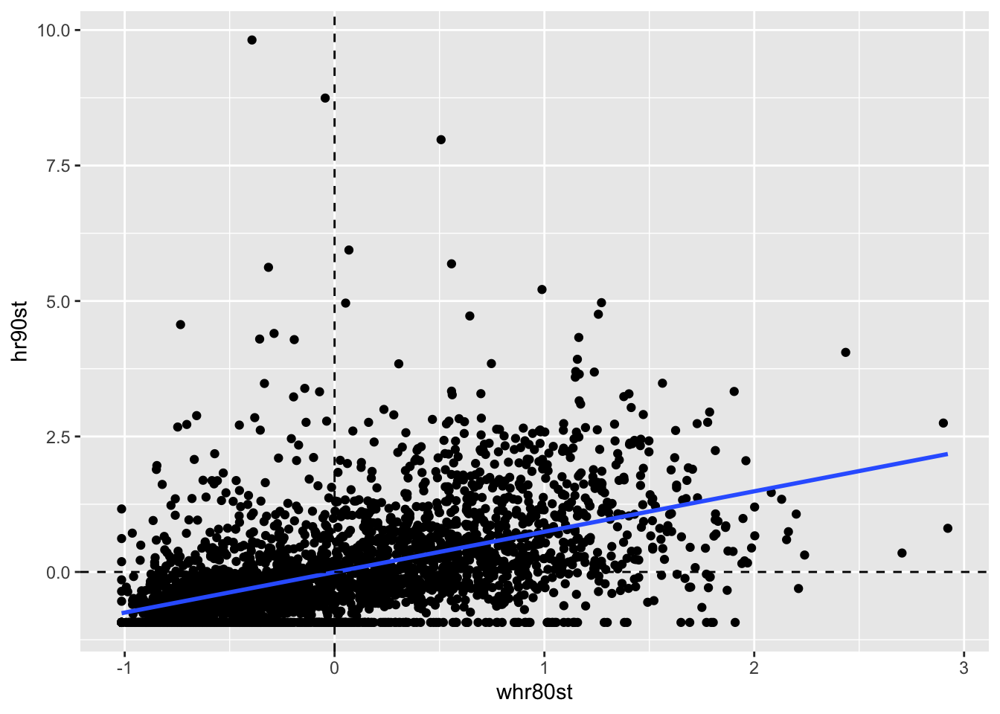
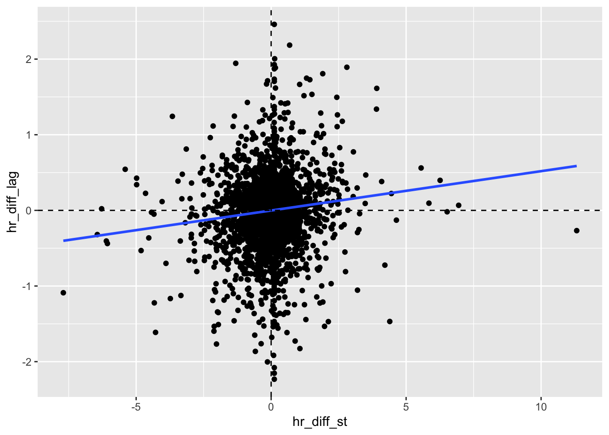
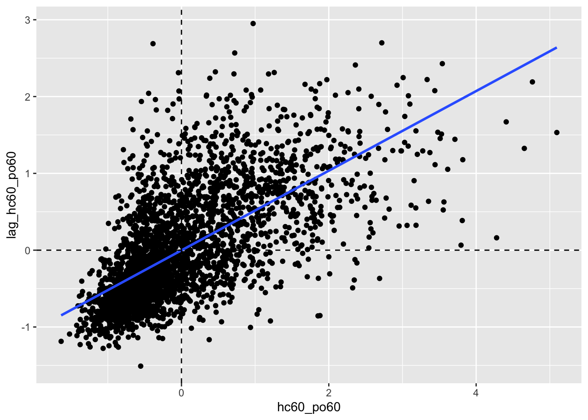

Chapter 11 Global Spatial Autocorrelation 2
Introduction
This notebook cover the functionality of the Global Spatial Autocorrelation 2 section of the GeoDa workbook. We refer to that document for details on the methodology, references, etc. The goal of these notes is to approximate as closely as possible the operations carried out using GeoDa by means of a range of R packages.
The notes are written with R beginners in mind, more seasoned R users can probably skip most of the comments on data structures and other R particulars. Also, as always in R, there are typically several ways to achieve a specific objective, so what is shown here is just one way that works, but there often are others (that may even be more elegant, work faster, or scale better).
For this notebook, we use Cleveland house price data. Our goal in this lab is show how to assign spatial weights based on different distance functions.
11.0.1 Objectives
After completing the notebook, you should know how to carry out the following tasks:
Visualize bivariate spatial correlation
Assess different aspects of bivariate spatial correlation
Visualize bivariate spatial correlation among time-differenced values
Correct Moran's I for the variance instability in rates
11.0.1.1 R Packages used
sf: To read in the shapefile and make queen contiguity weights
spdep: To create spatial weights structure from neighbors structure.
ggplot2: To make customized plots such as a bivariate Moran's I scatter plot
robustHD: To compute standarized scores for variables and lag variables. in construction of a Moran's I scatterplot
11.0.1.2 R Commands used
Below follows a list of the commands used in this notebook. For further details and a comprehensive list of options, please consult the R documentation.
Base R:
install.packages,library,setwd,summary,attributes,lapply,class,length,lmsf:
st_read,st_relate,st_crs,st_transformspdep:
nb2listw,lag.listwggplot2:
ggplot,geom_smooth,geom_point,xlim,ylim,geom_hline,geom_vline,ggtitlerobustHD:
standardized
11.1 Preliminaries
Before starting, make sure to have the latest version of R and of packages that are compiled for the matching version of R (this document was created using R 3.5.1 of 2018-07-02). Also, optionally, set a working directory, even though we will not actually be saving any files.29
11.1.1 Load packages
First, we load all the required packages using the library command. If you don't have some of these in your system, make sure to install them first as well as their dependencies.30 You will get an error message if something is missing. If needed, just install the missing piece and everything will work after that.
library(sf)
library(spdep)
library(ggplot2)
library(robustHD)Obtaining the Data from the GeoDa website
To get the data for this notebook, you will and to go to US County Homocide Data The download format is a zipfile, so you will need to unzip it by double clicking on the file in your file finder. From there move the resulting folder titled: nyc into your working directory to continue. Once that is done, you can use the sf function: st_read() to read the shapefile into your R environment.
counties <- st_read("natregimes/natregimes.shp")## Reading layer `natregimes' from data source `/Users/karinaacosta/Box/handsonspatialdata/natregimes/natregimes.shp' using driver `ESRI Shapefile'
## Simple feature collection with 3085 features and 73 fields
## geometry type: MULTIPOLYGON
## dimension: XY
## bbox: xmin: -124.7314 ymin: 24.95597 xmax: -66.96985 ymax: 49.37173
## CRS: 432611.1.2 Creating the weights
The sf neighbor functions assume that coordinates for the data are planar. Since The current projection is that for latitude and longitude, it is best to tranform the coordinates to a planar projection for accuracy. To check the current projection, we use st_crs. To transform the projection, we use st_transform and the epsg number of our desired projection. For more indepth information on this, please check out the Spatial Data Handling notebook.
st_crs(counties)## Coordinate Reference System:
## User input: 4326
## wkt:
## GEOGCS["WGS 84",
## DATUM["WGS_1984",
## SPHEROID["WGS 84",6378137,298.257223563,
## AUTHORITY["EPSG","7030"]],
## AUTHORITY["EPSG","6326"]],
## PRIMEM["Greenwich",0,
## AUTHORITY["EPSG","8901"]],
## UNIT["degree",0.0174532925199433,
## AUTHORITY["EPSG","9122"]],
## AUTHORITY["EPSG","4326"]]counties <- st_transform(counties, 102003)To start we create a function for queen contiguity, which is just st_relate with the specified pattern for queen contiguity which is F***T****
st_queen <- function(a, b = a) st_relate(a, b, pattern = "F***T****")We apply the queen contiguity function to the voronoi polygons and see that the class of the output is sgbp. This structure is close to the nb structure, but has a few difference that we will need to correct to use the rest of spdep functionality.
queen.sgbp <- st_queen(counties)
class(queen.sgbp)## [1] "sgbp"This function converts type sgbp to nb. It is covered in more depth in the Contiguity Based Weight notebook. In short, it explicitly changes the name of the class and deals with the observations that have no neighbors.
as.nb.sgbp <- function(x, ...) {
attrs <- attributes(x)
x <- lapply(x, function(i) { if(length(i) == 0L) 0L else i } )
attributes(x) <- attrs
class(x) <- "nb"
x
}queen.nb <- as.nb.sgbp(queen.sgbp)To go from neighbors object to weights object, we use nb2listw, with default parameters, we will get row standardized weights.
queen.weights <- nb2listw(queen.nb)11.2 Bivariate spatial correlation - a Word of Caution
The concept of bivariate spatial correlation is complex and often misinterpreted. It is typically considered to the correlation between one variable and the spatial lag of another variable, as originally implemented in the precursor of GeoDa. However this does not take into account the inherent correlation between the two variables. More precisely, the bivariate spatial correlation is between \(x_i\) and \(\Sigma_jw_{ij}y_j\), but does not take into account the correlation between \(x_i\) and \(y_i\), i.e. between two variables at the same location.
As a result, this statistic is often interpreted incorrectly, as it may overestimate the spatial aspect of the correlation that instead may be due mostly to in-place correlation.
Below, we provide a more in-depth assessment of the different aspects of bivariate spatial and non-spatial association, but first we turn to the original concept of a bivariate Moran scatter plot.
11.3 Bivariate Moran Scatter Plot
11.3.1 Concept
In its initial conceptualization, as mentioned above, a bivariate Moran scatter plot extends the idea of a Moran scatter plot with a variable on the x-axis and its spatial lag on a y-axis to a bivariate context. The fundamental difference is that in the bivariate case the spatial lag pertains to a different variable. In essence, this notion of bivariate spatial correlation measures the degree to which the value for a given variable at a location is correlated with its neighbors for a different variable.
As in the univariate Moran scatter plot, the interest is in the slope of the linear fit. This yields a Moran’s I-like statistic as:
\[I_B=\frac{\Sigma_i(\Sigma_jw_{ij}*x_i)}{\Sigma_ix_i^2}\]
or, the slope of a regression of Wy on x.
As before, all variables are expressed in standardized form, such that their means are zero and their variance one. In addition, the spatial weights are row-standardized.
Note that, unlike in the univariate autocorrelation case, the regression of x on Wy also yields an unbiased estimate of the slope, providing an alternative perspective on bivariate spatial correlation.
A special case of bivariate spatial autocorrelation is when the variable is measured at two points in time, say \(z_{i,t}\) and \(z_{i,t-1}\). The statistic then pertains to the extent to which the value obsereved at a location at a given time, is correlated with its value at neighboring locations at a different point in time.
The natural interpretation of this concept is to relate \(z_{i,t}\) to \(\Sigma_jw_{ij}z_{j,t-1}\), i.e. the correlation between a value at t and its neighbors in a previous time period:
\[I_T=\frac{\Sigma_i(\Sigma_jw_{ij}z_{j,t-1}*z_{i,t})}{\Sigma_iz_{i,t}^2}\] i.e., the effect neighbors in t-1 on the present value.
Alternatively, and maybe less intuitively, one can relate the value at a previous time period \(z_{t-1}\) to its neighbors in the future, \(\Sigma_jw_{ij}z_t\) as:
\[I_T=\frac{\Sigma_i(\Sigma_jw_{ij}z_{j,t}*z_{i,t-1)}}{\Sigma_iz_{i,t-1}^2}\] i.e., the effect of a location at t-1 on its neighbors in the future.
While formally correct, this may not be a proper interpretation of the dynamics involved. In fact, the notion of spatial correlation pertains to the effect of neighbors on a central location, not the other way around. While the Moran scatter plot seems to reverse this logic, this is purely a formalism, without any consequences in the univariate case. However, when relating the slope in the scatter plot to the dynamics of a process, this should be interpreted with caution.
A possible source of confusion is that the proper regression specification for a dynamic process would be as:
\[z_{i,t}=\beta_1\Sigma_jw_{ij}z_{j,t-1} +u_i\] with \(u_i\) as the usual error term, and not as:
\[z_{i,t-1}= \beta_2\Sigma_jw_{ij}z_{j,t} + u_i\]
which would have the future predicting the past. This contrasts with the linear regression specification used (purely formally) to estimate the bivariate Moran’s I, for example:
\[\Sigma_jw_{ij}z_{j,t-1} = \beta_3z_{i,t} + u_i\]
In terms of the interpretation of a dynamic process, only \(\beta_1\) has intuitive appeal. However, in terms of measuring the degree of spatial correlation between past neighbors and a current value, as measured by a Moran's I coefficient, \(\beta_3\) is the correct interpretation.
As mentioned earlier, a fundamental difference with the univariate case is that the spatially lagged variable is no longer endogenous, so both specifications can be estimated by means of ordinary least squares.
In the univariate case, only the specification with the spatially lagged variable on the left hand side yields a valid estimate. As a result, for the univariate Moran’s I, there is no ambiguity about which variables should be on the x-axis and y-axis.
Inference is again based on a permutation approach, but with an important difference. Since the interest focuses on the bivariate spatial association, the values for x are fixed at their locations, and only the values for y are randomly permuted. In the usual manner, this yields a reference distribution for the statistic under the null hypothesis that the spatial arrangement of the y values is random. As mentioned, it is important to keep in mind that since the focus is on the correlation between the x value at i and the y values at the neighboring locations, the correlation between x and y at location i is ignored.
11.3.2 Creating a bivariate Moran scatter plot
To create the bivariate Moran scatterplot, we will need to standardize the variables beofre proceeding. This is simply, putting the variables in terms of z scores. To do this, we use standardize from the robustHD package.
counties$hr80st <- standardize(counties$HR80)
counties$hr90st <- standardize(counties$HR90)Now that we have standardized the variables, we can create the lag variable for homocide rates in 1980. This is done with lag.listw from spdep. For more a more indepth coverage of this function , please see the Application of Spatial Weights notebook.
counties$whr80st <- lag.listw(queen.weights,counties$hr80st)In constructing the majority of our plots, we use ggplot2 because it makes aesthically pleasing and functional plots. The purpose of this tutorial is not to teach ggplot2, but to use it in creqating specializzed plots such as the bivariate Moran plot. For indepth coverage of basic ggplot2 functionality please see the Exploratory Data Analysis notebooks or ggplot2 documentation.
To make the bivariate Moran, we make a scattplot of the lag variable for 1980 homocide rates vs the homocide rate for 1990. In GeoDa the lag variable and standardization are done automatically and all you have to do is select the desired variables. The custom specifications use for this plot are the dashed lines at the x and y axis and the simple regression line. geom_vline and geom_hline.
ggplot(data = counties, aes(x=hr90st,y=whr80st)) +
geom_point() +
geom_smooth(method = "lm", se = FALSE) +
geom_hline(yintercept = 0, lty = 2) +
geom_vline(xintercept = 0, lty =2) +
xlim(-12,12) +
ylim(-12,12) +
ggtitle("Bivariate Moran's I, hr(90) and lagged hr(80) ")## `geom_smooth()` using formula 'y ~ x'
To get the summary statistics and bivariate Moran's I statistic, we will run a rgeression separate from the plot. For this regression, we use the same variables has the bivariate Moran plot in the base R lm function. To view the results, we use the summary command. The Moran's I statistic is the slope of the regression line, which is the coefficient of hr90st in the summary results
lmfit <- lm(whr80st ~ hr90st, data = counties)
summary(lmfit)##
## Call:
## lm(formula = whr80st ~ hr90st, data = counties)
##
## Residuals:
## Min 1Q Median 3Q Max
## -3.9290 -0.4171 -0.1024 0.3595 2.6279
##
## Coefficients:
## Estimate Std. Error t value Pr(>|t|)
## (Intercept) 0.004734 0.010694 0.443 0.658
## hr90st 0.359668 0.010696 33.628 <2e-16 ***
## ---
## Signif. codes: 0 '***' 0.001 '**' 0.01 '*' 0.05 '.' 0.1 ' ' 1
##
## Residual standard error: 0.594 on 3083 degrees of freedom
## Multiple R-squared: 0.2684, Adjusted R-squared: 0.2681
## F-statistic: 1131 on 1 and 3083 DF, p-value: < 2.2e-1611.3.3 A closer look at bivariate spatial correlation
In contrast to the univariate Moran scatter plot, where the interpretation of the linear fit is unequivocably Moran’s I, there is no such clarity in the bivariate case. In addition to the interpretation offered above, which is a traditional Moran’s I-like coefficient, there are at least four additional perspectives that are relevant. We consider each in turn.
11.3.3.1 Serial (temporal) correlation
To examine the temporal correlation of homocide rates, we plot the standardized variable for each time period. This gives us a sense of the temporal autocorrelation of homocide rates for a lag order of 1.
ggplot(data = counties, aes(x = hr80st, y = hr90st)) +
geom_point() +
geom_smooth(method = "lm", se = FALSE) +
geom_hline(yintercept = 0, lty = 2) +
geom_vline(xintercept = 0, lty =2) ## `geom_smooth()` using formula 'y ~ x'
Again we us the lm function and summary function to get a sense of the relationship between the variables. With a highly significant slope of .552, strong temporal correlation is suggested.
lmfit <- lm(hr90st ~ hr80st, data = counties)
summary(lmfit)##
## Call:
## lm(formula = hr90st ~ hr80st, data = counties)
##
## Residuals:
## Min 1Q Median 3Q Max
## -3.8479 -0.3701 -0.1609 0.2806 10.3772
##
## Coefficients:
## Estimate Std. Error t value Pr(>|t|)
## (Intercept) 1.018e-16 1.501e-02 0.00 1
## hr80st 5.526e-01 1.501e-02 36.82 <2e-16 ***
## ---
## Signif. codes: 0 '***' 0.001 '**' 0.01 '*' 0.05 '.' 0.1 ' ' 1
##
## Residual standard error: 0.8336 on 3083 degrees of freedom
## Multiple R-squared: 0.3054, Adjusted R-squared: 0.3052
## F-statistic: 1356 on 1 and 3083 DF, p-value: < 2.2e-1611.3.3.2 Serial (temporal) correlation between spatial lags
Next we run a regression of the spatial lags of homocide rates for both time periods. This will be a regression of \(\Sigma_jw_{ij}y_{j,t}\) on \(\Sigma_jw_{ij}y_{j,t-1}\). To begin, wewill need to create the lag variable for 1990.
counties$whr90st <- lag.listw(queen.weights, counties$hr90st)To make this plot, we just plot the lag variable for 1990 against the one for 1980.
ggplot(data = counties, aes(x= whr80st, y = whr90st)) +
geom_point() +
geom_smooth(method = "lm", se = FALSE) +
geom_hline(yintercept = 0, lty = 2) +
geom_vline(xintercept = 0, lty =2) ## `geom_smooth()` using formula 'y ~ x'
Again the slope is highly signiificcant with a positive slope of .801, even strong than the actual variable's temporal correlation.
lmfit <- lm(whr90st ~ whr80st, data = counties)
summary(lmfit)##
## Call:
## lm(formula = whr90st ~ whr80st, data = counties)
##
## Residuals:
## Min 1Q Median 3Q Max
## -1.73241 -0.20479 -0.03393 0.16637 2.13011
##
## Coefficients:
## Estimate Std. Error t value Pr(>|t|)
## (Intercept) -0.0005499 0.0074544 -0.074 0.941
## whr80st 0.8014254 0.0107383 74.633 <2e-16 ***
## ---
## Signif. codes: 0 '***' 0.001 '**' 0.01 '*' 0.05 '.' 0.1 ' ' 1
##
## Residual standard error: 0.414 on 3083 degrees of freedom
## Multiple R-squared: 0.6437, Adjusted R-squared: 0.6436
## F-statistic: 5570 on 1 and 3083 DF, p-value: < 2.2e-1611.3.3.3 Space-time regression
In this case we have already computed the variables need to construct the plot, so we can start with ggplot2. The regression here is \(y_{i,t}\) on \(\Sigma_jw_{ij}y_{j,t-1}\)
ggplot(data = counties, aes(x= whr80st, y = hr90st)) +
geom_point() +
geom_smooth(method = "lm", se = FALSE) +
geom_hline(yintercept = 0, lty = 2) +
geom_vline(xintercept = 0, lty =2) ## `geom_smooth()` using formula 'y ~ x'
Now we run the lm function to get the regression statistics.
lmfit <- lm(hr90st ~ whr80st, data = counties)
summary(lmfit)##
## Call:
## lm(formula = hr90st ~ whr80st, data = counties)
##
## Residuals:
## Min 1Q Median 3Q Max
## -2.3519 -0.4569 -0.1702 0.2711 10.1136
##
## Coefficients:
## Estimate Std. Error t value Pr(>|t|)
## (Intercept) -0.003532 0.015403 -0.229 0.819
## whr80st 0.746141 0.022188 33.628 <2e-16 ***
## ---
## Signif. codes: 0 '***' 0.001 '**' 0.01 '*' 0.05 '.' 0.1 ' ' 1
##
## Residual standard error: 0.8555 on 3083 degrees of freedom
## Multiple R-squared: 0.2684, Adjusted R-squared: 0.2681
## F-statistic: 1131 on 1 and 3083 DF, p-value: < 2.2e-16This yields a highly signifcant slope of .746
11.3.3.4 Serial and space-time regression
Finally, we can include both in-situ correlation and space-time correlation in a regression specification of \(y_{i,t}\) i.s hr90st on both \(x_{i,t-1}\) (ie, hr80st) and \(\Sigma_jw_{ij}x_{j,t-1}\)(ie whr80st)
lmfit <- lm(hr90st ~ whr80st + hr80st, data = counties)
summary(lmfit)##
## Call:
## lm(formula = hr90st ~ whr80st + hr80st, data = counties)
##
## Residuals:
## Min 1Q Median 3Q Max
## -3.2802 -0.3807 -0.1202 0.2574 10.3821
##
## Coefficients:
## Estimate Std. Error t value Pr(>|t|)
## (Intercept) -0.002093 0.014282 -0.147 0.883
## whr80st 0.442224 0.024628 17.956 <2e-16 ***
## hr80st 0.383861 0.017099 22.450 <2e-16 ***
## ---
## Signif. codes: 0 '***' 0.001 '**' 0.01 '*' 0.05 '.' 0.1 ' ' 1
##
## Residual standard error: 0.7932 on 3082 degrees of freedom
## Multiple R-squared: 0.3712, Adjusted R-squared: 0.3708
## F-statistic: 909.7 on 2 and 3082 DF, p-value: < 2.2e-16In the regression, both effects are highly significant, with a coefficient of 0.384 for the in-situ effect, and 0.442 for the space-time effect.
Needless to say, focusing the analysis solely on the bivariate Moran scatter plot provides only a limited perspective on the complexity of space-time (or, in general, bivariate) spatial and space-time associations.
11.4 Differential Moran Scatter Plot
11.4.1 Concept
An alternative to the bivariate spatial correlation between a variable at one point in time and its neighbors at a previous (or, in general, any different) point in time is to control for the locational fixed effects by diffencing the variable. More precisely, we apply the computation of the spatial autocorrelation statistic to the variable \(y_{i,t} - y_{i,t-1}\).
This takes care of any temporal correlation that may be the result of a fixed effect(i.e. a set of variables determining the value of \(y_i\) that remain unchanging over time). Specifically if \(\mu_i\) were a fixed effect associated with location i, we could express the value at each location for time t as the sum of some intinsic value and the fixed effect, $y_{i,t} = y_{i,t}^* + _i $, where \(\mu_i\) is unchanged over time (hence, fixed). The presence of \(\mu\) induces a temporal correlation between \(y_{i,t}\) and \(y_{i,t-1}\), above and beyond the correlation between \(y_{i,t}^*\) and \(y_{i,t-1}^*\). Taking the difference eliminates the fixed effect and ensures that any remainin correlation is solely due to \(y^*\).
A differential Moran's I is then the slope in a regression of the spatial lag of the difference i.e. \(\Sigma_jw_{ij}(y_{j,t} - y_{j,t-1})\) on the difference \(y_{i,t} - y_{i,t-1}\).
All the caveats and different interpretations that apply to the generic bivariate case are also relevant here.
11.4.2 Implementation
Same as the other sections, we must first calculate and standardize the variables before proceeding to construct the plot. In GeoDa this process is done automatically, but here we will need a few extra steps. First we calcualte the standardized score of the difference between the variable, NOT the difference between the standardized score of each variable. To do this, we just use standardize on the difference between HR80 and HR90. Then we calcualte the lag variable with lag.listw on the standardized difference variable.
counties$hr_diff_st <- standardize(counties$HR90 - counties$HR80)
counties$hr_diff_lag <- lag.listw(queen.weights, counties$hr_diff_st)To construct the plot, we use the same functions as earlier, but just replace the variables. In this case, we use the ones calcualted above for the standardized difference then the lag of the standardized difference.
ggplot(data = counties, aes(x = hr_diff_st, y = hr_diff_lag)) +
geom_point() +
geom_smooth(method = "lm", se = FALSE) +
geom_hline(yintercept = 0, lty = 2) +
geom_vline(xintercept = 0, lty =2) ## `geom_smooth()` using formula 'y ~ x'
lmfit <- lm(hr_diff_lag~hr_diff_st, data = counties)
summary(lmfit)##
## Call:
## lm(formula = hr_diff_lag ~ hr_diff_st, data = counties)
##
## Residuals:
## Min 1Q Median 3Q Max
## -2.23658 -0.21238 0.03382 0.22281 2.45484
##
## Coefficients:
## Estimate Std. Error t value Pr(>|t|)
## (Intercept) -0.001690 0.008258 -0.205 0.838
## hr_diff_st 0.052007 0.008260 6.297 3.47e-10 ***
## ---
## Signif. codes: 0 '***' 0.001 '**' 0.01 '*' 0.05 '.' 0.1 ' ' 1
##
## Residual standard error: 0.4587 on 3083 degrees of freedom
## Multiple R-squared: 0.0127, Adjusted R-squared: 0.01238
## F-statistic: 39.65 on 1 and 3083 DF, p-value: 3.474e-10The slope is about .052, which is much smaller than in magnitude than the other measures used thus far.
11.4.3 Options
11.5 Moran Scatter Plot for EB Rates
11.5.1 Concept
An Empirical Bayes (EB) standardization was suggested by Assunção and Reis (1999) as a means to correct Moran’s I spatial autocorrelation test statistic for varying population densities across observational units, when the variable of interest is a rate or proportion. This standardization borrows ideas from the Bayesian shrinkage estimator outlined in discussion of Empirical Bayes smoothing.
This approach is different from EB smoothing in that the spatial autocorrelation is not computed for a smoothed version of the original rate, but for a transformed standardized random variable. In other words, the crude rate is turned into a new variable that has a mean of zero and unit variance, thus avoiding problems with variance instability. The mean and variance used in the transformation are computed for each individual observation, thereby properly accounting for the instability in variance.
The technical aspects are given in detail in Assunção and Reis (1999) and in the review by Anselin, Lozano-Gracia, and Koschinky (2006), but we briefly touch upon some salient issues here. The point of departure is the crude rate, say \(r_i = O_i/P_i\), where \(O_i\) is the count of events at location i and \(P_i\) is the corresponding population at risk.
The rationale behind the Assuncao-Reis approach is to standardize each \(r_i\) as
\[z_i = \frac{r_i - \beta}{\sqrt{\alpha + (\beta/P_i)}}\]
using an estimated mean \(\beta\) and standard error \(\sqrt{\alpha + (\beta/P_i)}\). The parameter \(\alpha\) and \(\beta\) are related to the prior distribution for the risk, which is detailed in the notebook on rate mapping.
In practice, the prior parameters are estimated by means of the so-called method of moments (e.g., Marshall 1991), yielding the following expressions:
\[\beta=O/P\]
With O as the total event count \((\Sigma_iO_i)\), and P as he total population count \((\Sigma_iP_i)\), and
\[\alpha = [\Sigma_iP_i(r_i - \beta)^2]/P - \beta(P/n)\]
with n as the total number of observations (in other words, P/n is the average population)
One problem with the method of moments estimator is that the expression for \(\alpha\) could yield a negative result. In that case, its value is typically set to zero, i.e. \(\alpha = 0\). However, Assuncao and Reis(1999), the value for \(\alpha\) is set to zero when the resulting estimate for variance is negative, that is, \(\alpha + \beta/P_i <0\). Slight differences in the standardized variates may result depending on the convention used. In GeoDa, when the variance estimate is negative, the original raw rate is used.
11.5.2 Implementation
To calculate the empirical bayes rates, we will use basic R operations. We start by calculating the initial variables.
beta <- sum(counties$HC60) / sum(counties$PO60)
r_i <- counties$HC60 / counties$PO60
P_i <- counties$PO60
n <- ncol(counties)
P <- sum(counties$PO60)With the parameters from above, we can calculate \(\alpha\), by the formula specified in the concept section.
alpha <- sum(P_i * (r_i - beta)^2) / P - beta/(P/n)With \(\alpha\), we can get the standard error used to later calculate the standardized values.
se <- sqrt(alpha + beta/P_i)Now the standardized values are just the crude rate minus \(\beta\) and divided by the standard error.
z_i <- (r_i - beta) / seWith our standardized values, we can make the lag variable to constuct our empirical bayes Moran plot. We use lag.listw as before to make the spatial lag varible.
counties$hc60_po60 <- z_i
counties$lag_hc60_po60 <- lag.listw(queen.weights, z_i)Now with the same ggplot2 functions as earlier we plot the smoothed rate variable against the lag smoothed rate variable.
ggplot(data = counties, aes(x = hc60_po60, y = lag_hc60_po60)) +
geom_point() +
geom_smooth(method = "lm", se = FALSE) +
geom_hline(yintercept = 0, lty = 2) +
geom_vline(xintercept = 0, lty =2) ## `geom_smooth()` using formula 'y ~ x'
To get the regression statistics, we run lm and then examine the summary with summary.
lmfit <- lm(lag_hc60_po60 ~ hc60_po60, data = counties)
summary(lmfit)##
## Call:
## lm(formula = lag_hc60_po60 ~ hc60_po60, data = counties)
##
## Residuals:
## Min 1Q Median 3Q Max
## -2.02610 -0.29105 -0.08858 0.23217 2.48453
##
## Coefficients:
## Estimate Std. Error t value Pr(>|t|)
## (Intercept) 0.0003397 0.0083319 0.041 0.967
## hc60_po60 0.5081682 0.0105725 48.065 <2e-16 ***
## ---
## Signif. codes: 0 '***' 0.001 '**' 0.01 '*' 0.05 '.' 0.1 ' ' 1
##
## Residual standard error: 0.4627 on 3083 degrees of freedom
## Multiple R-squared: 0.4284, Adjusted R-squared: 0.4282
## F-statistic: 2310 on 1 and 3083 DF, p-value: < 2.2e-16